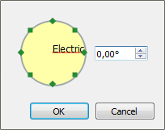

Rotate text¶
Exist two different ways to ratate the text field on QElectroTech. The text field can be rotated as object or the text orientation can be defined inside the text field object.
Rotate the text field¶
The text field is considered an object by QElectroTech, it can be selected, placed and rotated as the elements and pictures.
This means that, as the rest of objects, it can be rorated 90, 180 or 270 degrees.
Right click on the text field which should be rotated.

Figure: QElectroTech text field options
Select the option Rotate to rotate the text field object 90 degrees on the clock direction.
See also
For more information about rotating objects at the workspace, please refers to Rotate object section.
Define text orientation¶
Defining the orientation of the text only rotates the content from the text field, the option rotate change the orientation of the complete object.
The advantage of choosing the text orientation is the posibility to choose any angle value inside the range -360 ÷ 360 degrees.
Right click on the text field which should be oriented.
Figure: QElectroTech text field options
Select the option Choose text orientation to display the text orientation PopUP window.
Figure: QElectroTech choose orientation PopUP window
Define the angle of orientation from the text.
Press Accept to save the changes and close the text orientation PopUP window.